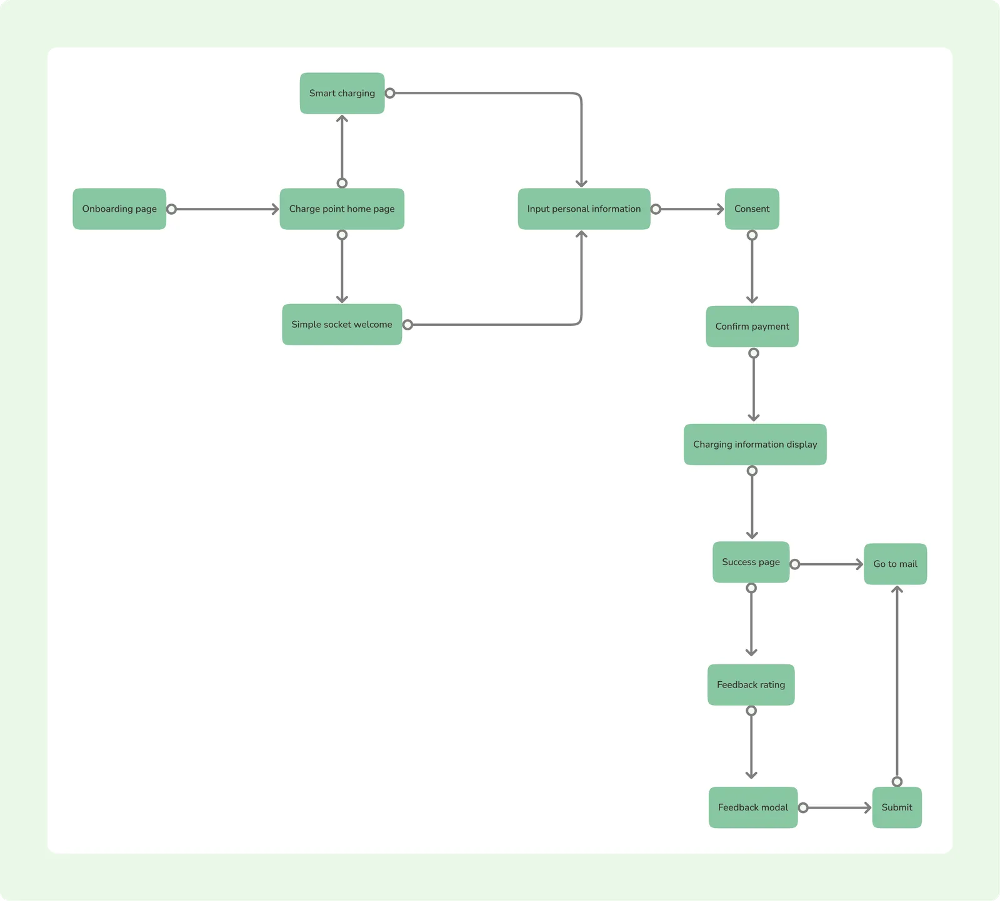
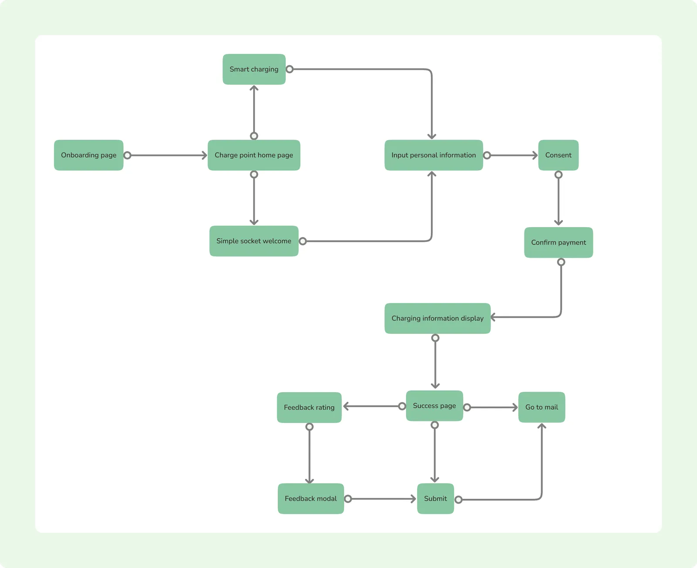
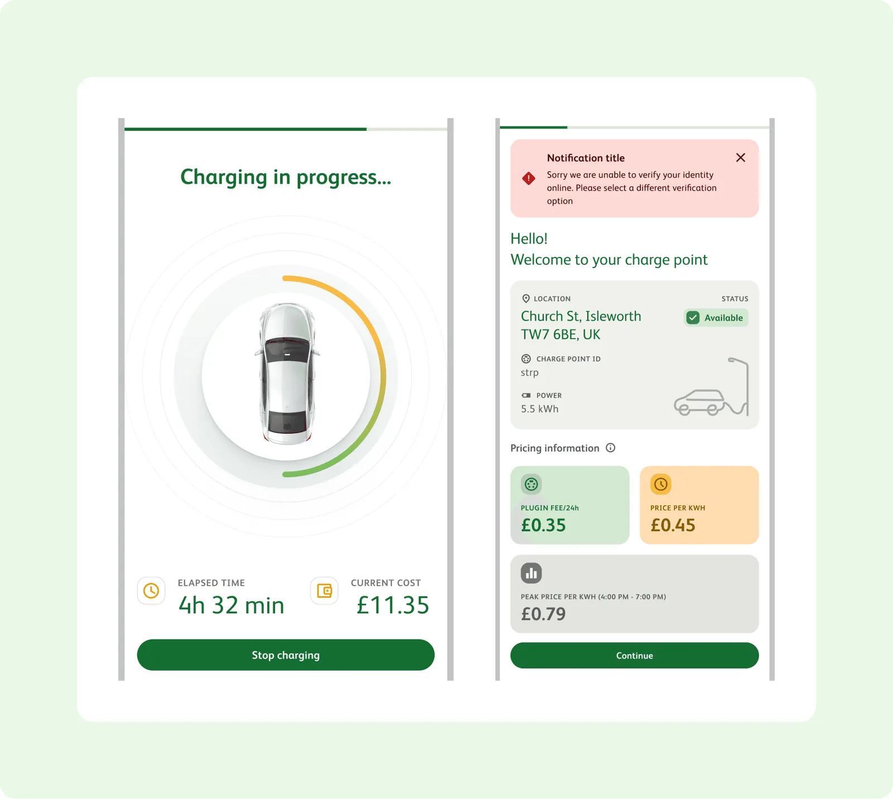

Netguru · Sustainable Energy
Taking EV drivers from "I need to charge" to "charged and gone"
A mobile app that guides EV drivers from finding a charging point to completing a session, covering discovery, smart and simple charging flows, payment and real-time charging status.
- Company
- Netguru (agency)
- Role
- Senior Product Designer
- When
- 2022 – 2023
- Where
- Warsaw, Poland

Overview
An app and a design system, built together
An energy company running a public EV charging network needed a mobile app that could take a driver from "I need to charge" to "I'm charged and gone" without friction. It also needed a design system its internal teams could build on as the product grew. I worked side by side with another product designer to design the app end to end and establish the design system behind it, from early workshops through handover to engineering.
Goal
Build a scalable approach by improving the SimpleSocket (direct access) product, and build the design system.
My role
- Co-designed the full app: onboarding, charge point discovery, the charging flow, and error and edge-case states.
- Built the design system from scratch alongside the UI (components, patterns and a Figma style guide), so the system and the product matured together.
- Split and reviewed flows with a second designer to keep the product consistent end to end.
- Handed off finished designs and component documentation directly to the development team.
Approach
Phased, so each step informed the next
- Direct design support: early workshops and hands-on design to define functional requirements, tighten the design language and spot patterns worth systematising.
- Ecosystem analysis and design system set-up: workshops on the client's wider product landscape, then a component library for the highest-priority app first, so development could start without waiting for the whole system.
- Further design work: expanding and refining flows as requirements firmed up.
- Ongoing design system work: turning the system into a maintained, living resource rather than a one-off deliverable.
Each phase's findings fed directly into scoping the next, which kept the system grounded in real product needs instead of a top-down spec.
User journey mapping
Every path, not just the happy path
- Entry and onboarding: from QR code scan through access, privacy consent and onboarding, with language settings, destination search and a support chatbot.
- Charge point discovery: searching for a destination, a map of nearby charging points, choosing one and getting directions.
- Two ways to charge: "smart charging" and "simple socket" paths that meet in a shared personal details, consent and payment flow.
- Payment and session set-up: consent, immediate or smart charging, card or Apple Pay, and charge level.
- Completion and feedback: charging summary, success page, rating, email confirmation and an emailed invoice once charging completes.
Mapping it end to end showed which steps, such as consent and payment, could be designed once and reused across entry points. That fed directly into the component decisions in the design system.


Key flows
What I designed
- Onboarding and tutorial: introducing the app and setting preferences such as language and plug type.
- Home and status: a clear "plugged in" state showing charge status at a glance.
- Charging point search: a map with results as a scannable list.
- Charge set-up: payment and charging details in as few steps as possible.
- Charging and summary: real-time progress, then a clear summary and feedback prompt.
- Error states: out-of-service points, connection issues and other failures, without dead ends.
- Landscape mode: the core experience holds up when the phone is rotated.

Design system thinking
Components proven in real flows first
Rather than treating the UI and the system as separate tracks, I extracted components as they emerged from real screens, so every component was already proven in a live flow before it was formalised. That kept the system practical, and gave developers a library they could build from confidently on day one.
Outcome
Shipped, adopted, live
- Shipped on schedule: the app launched within the original project timeline.
- Adopted by the client: their own team took up the component library and kept building on it.
- Live product: the design system went from a proposed structure to something proven in production.
The project laid the foundation for the client's design system to continue as an ongoing, maintained practice rather than a one-time engagement.